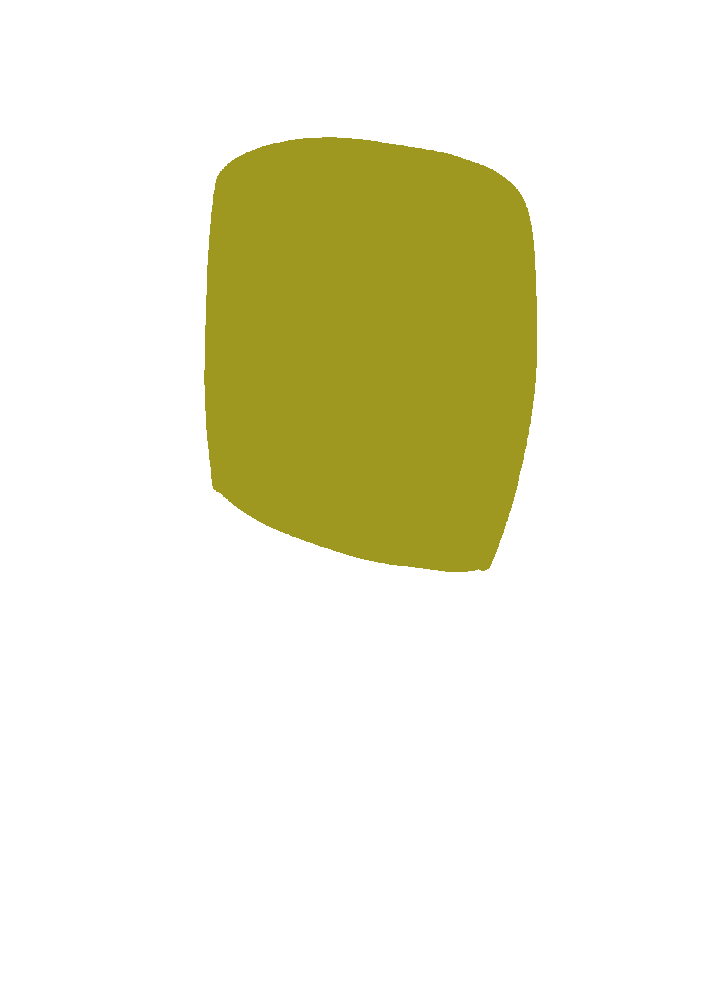
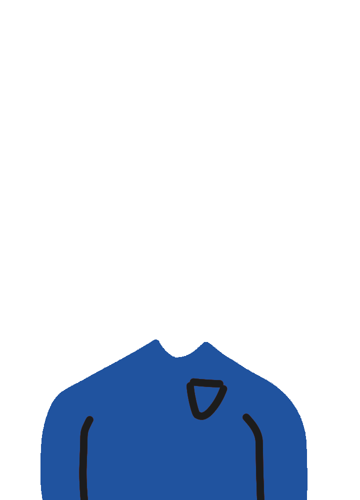
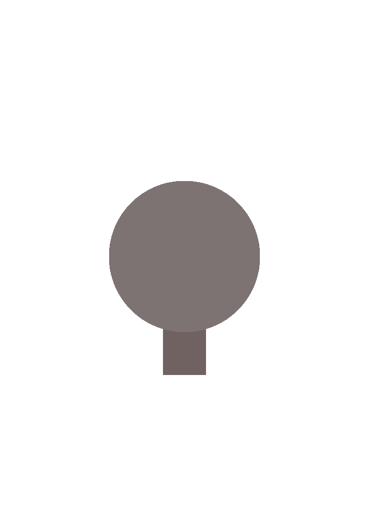
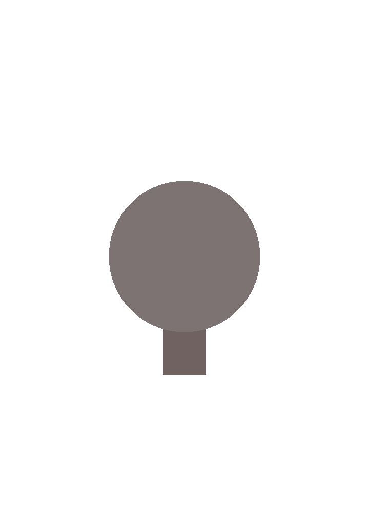

Click through the available buttons below the character in order to select an outfit/look for the character displayed.




What moments were you most proud of your efforts in this course? Why?
To be perfectly honest, the only thing I've been proud of and happy to do in this course was developing my own game.
Other than that, this course has been hell. I guess it's because game developing is something I'm very passionate about.
Provide an example of a tough situation or barrier you handled well in this course and the key strengths you relied on.
Well, I didn't know how to code in HTML, Java, or CSS whatsoever before I began in this course. However, I relied on my ability to think outside the box as well as my determination. I never gave up and that's what keeps me from failing.
If you could do anything in this course over again, what, if anything, would you change?
I'd rather not do anything over again or change anything. This course is terrible.
What actions/behaviours should you start doing that would help you in future courses?
Not breaking my hands in the middle of a semester would probably be a good change.